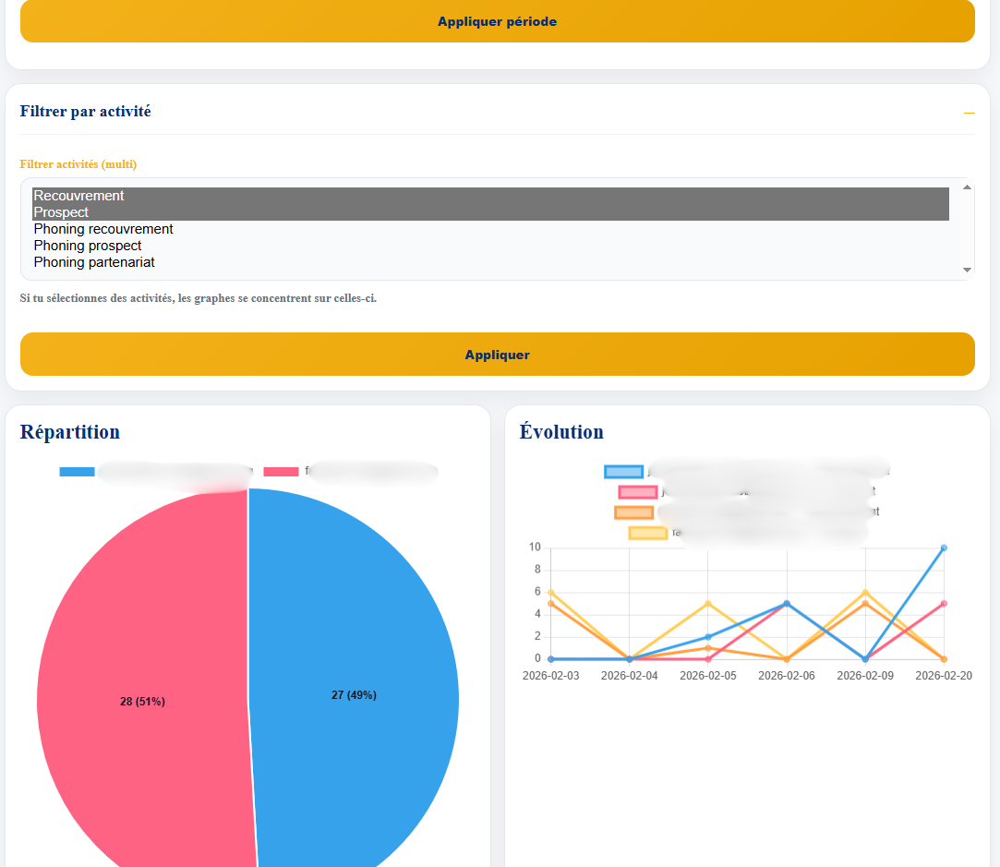
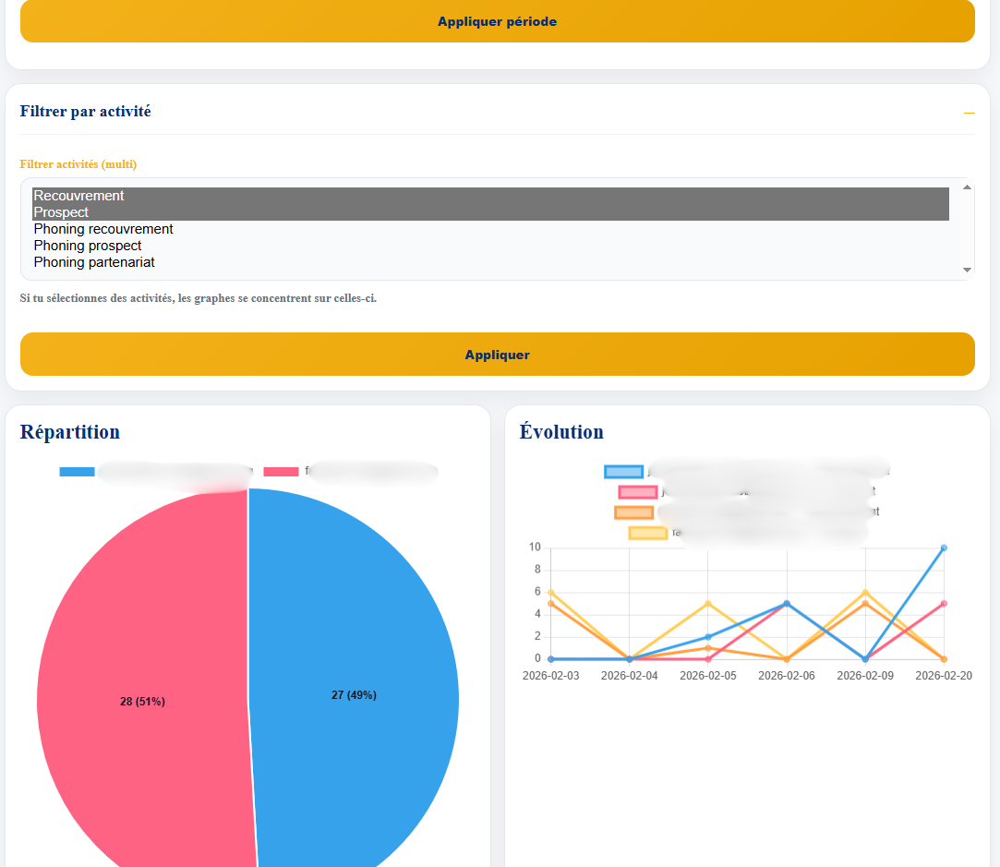

MOBI POINTAGE — Plateforme interne de pilotage & reporting (FastAPI)
🚧 Projet en cours — base technique stable, modules principaux déjà développés. Déploiement et finalisation UI/optimisations en progression.
MOBI POINTAGE est une plateforme web interne conçue pour centraliser la saisie quotidienne, le suivi opérationnel et le reporting multi-agents. L’objectif est de passer d’un fonctionnement basé sur fichiers/feuilles à un système sécurisé, structuré et exploitable en temps réel, avec une base SQL et des API prêtes pour dashboards et analyses.
Contexte
Après plusieurs automatisations no-code (Google Sheets / Apps Script), le besoin a évolué vers une solution plus robuste : gestion des utilisateurs, rôles, historique, agrégations, tableaux de bord et export BI. J’ai donc initié le développement d’une plateforme web complète capable de supporter la croissance et de réduire les limites des fichiers partagés.
Objectifs
- Centraliser les opérations quotidiennes (saisie, suivi, reporting)
- Mettre en place une authentification sécurisée et des rôles (Admin / Agent)
- Créer des vues par agent (portefeuille) + une vue globale pour la direction
- Automatiser les statistiques (cumul, séries temporelles, KPI)
- Préparer le déploiement et la montée en charge (base SQL, API, dashboards)
Fonctionnalités clés
- Connexion / Déconnexion avec gestion de session
- Rôles : Admin (vue globale) / Agent (vue portefeuille)
- Dashboards : compteurs + graphiques (via endpoints JSON)
- Suivi recouvrement : recherche, filtres, agrégation, détail client
- Reporting : saisie journalière et synthèses exportables
- Historique / Activity : traçabilité des actions et mises à jour
- Templates HTML (Jinja2) + pages dédiées par module
Architecture technique
- Backend : FastAPI (Python)
- Base de données : PostgreSQL
- Accès DB : SQLAlchemy
- Templates : Jinja2
- Sécurité : hash mot de passe + session cookie
- API internes : endpoints JSON pour compteurs & séries temporelles
Modules
- Auth : login, session, contrôle des accès
- Dashboard : vue admin / agent + stats
- Recouvrement : gestion portefeuille et états
- Reports : saisie + synthèses
- Factures : préparation génération & suivi
- Activity : historique des actions
Points forts
- Projet réel entreprise : logique métier + rôles + sécurité
- Structure backend propre (routes modulaires, templates, config)
- Prêt pour BI : données structurées + endpoints statistiques
- Évolutif : migration progressive Sheets → SQL
Roadmap
- Finaliser l’interface (UX) et compteurs dashboard
- Durcir la sécurité (HTTPS, cookies sécurisés)
- Optimiser requêtes & index DB
- Déploiement (Docker/VPS) + monitoring
- Connexion BI en production
Captures
 


Note : en environnement entreprise, les données visibles doivent être anonymisées.